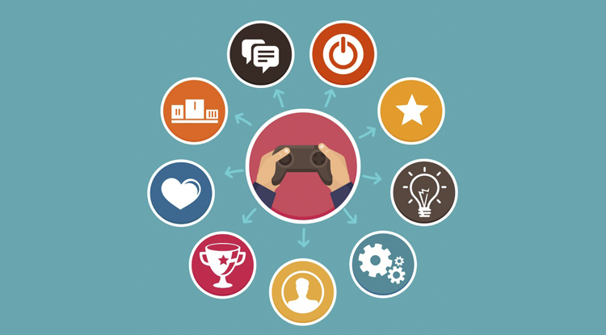
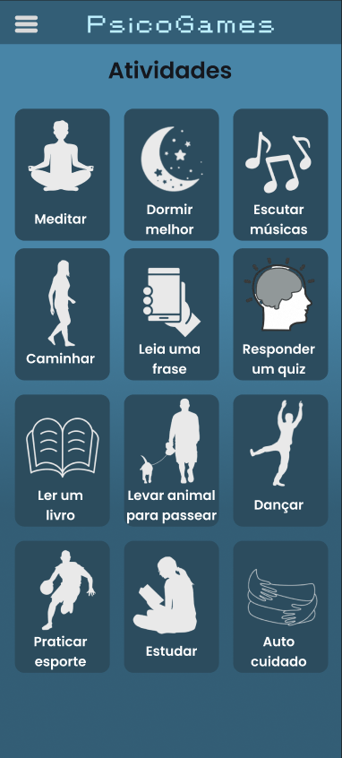

O que é gamificação?
Gamificação tem como significado o uso de mecanismos dos jogos em contextos de não entretenimento, como treinamento corporativo, marketing e processos de aprendizagem. É uma estratégia criada com objetivo de gerar motivação e engajamento dos participantes.
Nessa estratégia, vários elementos característicos de qualquer jogo — como um sistema de pontuação e ranking, um objetivo claro a ser alcançado, recompensas ao completar as missões — podem ser usados para atrair e engajar pessoas, promover o aprendizado e motivar determinadas ações do público-alvo.
A gamificação pode ser aplicada nos mais diversos segmentos, desde educação, saúde, causas sociais, marketing e até em treinamentos corporativos, atingindo, assim, públicos e objetivos variados. Em suma, ela é considerada uma opção mais atrativa para engajar a audiência, especialmente mais jovem, em comparação a outras plataformas tecnológicas, como AVAs e treinamentos online. Porém, utilizar o game não significa abandonar totalmente os outros métodos já utilizados e, sim, incorporar essa técnica para melhorar os resultados.
Por que gamificação?

De acordo com a empresa de pesquisa Newzoo, temos aproximadamente 2.5 bilhões de pessoas que jogam ao redor do mundo. No Brasil, estima-se que 66,3% das pessoas jogam independentemente do tipo de dispositivo e possuem idade média entre 25 e 34 anos, conforme dados da Pesquisa Game Brasil.
Outros estudos mostram que colaboradores se sentem mais motivados quando há elementos de jogos em seus treinamentos, cerca de 83% responderam positivamente. Além disso, 89% se sentem mais produtivos quando seu trabalho está gamificado.
Estes números mostram que jogar faz parte do cotidiano das pessoas e aplicar elementos de jogos em atividades que não são de entretenimento pode ajudar no engajamento e na motivação.
Aplicativo PsicoGames
O PsicoGames é uma plataforma inovadora de gamificação projetada para ajudar os usuários a aumentar sua produtividade e melhorar seu bem-estar emocional ao mesmo tempo. A ideia por trás deste aplicativo é transformar tarefas cotidianas em desafios divertidos e recompensadores.

Recursos Principais:
Missões Produtivas: O aplicativo apresenta uma variedade de missões e desafios diários que os usuários podem completar. Essas missões estão relacionadas a metas pessoais, tarefas profissionais e até mesmo atividades de autocuidado.
Pontuação e Recompensas: Cada missão concluída rende ao usuário pontos, que podem ser usados para desbloquear troféus dentro do aplicativo. Isso cria um sistema de incentivo que motiva os usuários a cumprir suas tarefas.
Acompanhamento de Progresso: Os usuários podem acompanhar seu progresso pessoal. Uma barra de progresso ajudam a visualizar o crescimento da produtividade ao longo do tempo.
Personalização: Os usuários podem personalizar sua experiência, escolhendo desafios que se adequem às suas necessidades específicas. Isso garante que o aplicativo seja relevante para uma ampla gama de pessoas.
Benefícios:
Aumento da Produtividade: Ao transformar tarefas em desafios e recompensas, o PsicoGames ajuda os usuários a manter o foco e a concluir suas tarefas de maneira mais eficiente.
Melhoria do Bem-Estar Emocional: Ao incentivar práticas de autocuidado, o aplicativo promove o bem-estar emocional dos usuários.
Engajamento e Motivação: A gamificação e a competição saudável mantêm os usuários engajados e motivados a atingir seus objetivos.
Personalização: Os usuários podem personalizar sua experiência, escolhendo desafios que se adequem às suas necessidades específicas. Isso garante que o aplicativo seja relevante para uma ampla gama de pessoas.